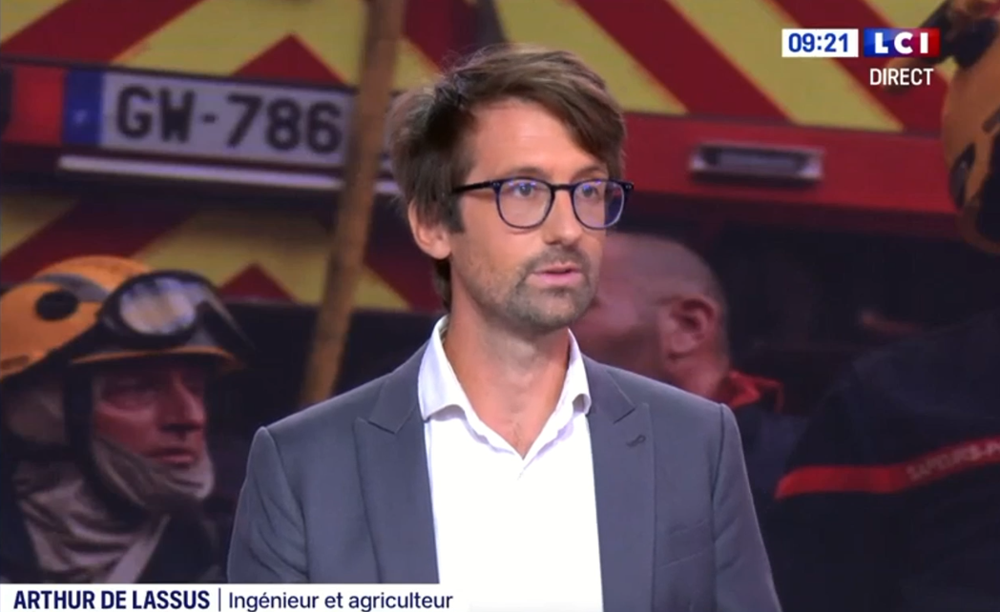

La transition écologique par la tête et le corps.
Expert énergie-climat et maraîcher, je lie la réflexion théorique à l’action concrète pour bâtir un futur vraiment durable.
Ils m’ont fait confiance


Ils m’ont fait confiance

La tête
- Expert énergie-climat
- Rapports & conférences
- Créateur et animateur d’ateliers

Le corps
- Maraîchage biologique
- Autonomie énergétique
- Autoconstruction en paille porteuse

Les fake news de l’écologie
Voiture électrique, climatisation, pompes à chaleur, coût de la transition : nous répondons, chiffres en main, aux idées fausses qui encombrent le débat écologique.
Ce que je propose
Des interventions pour les entreprises, les collectivités et l’enseignement supérieur.
Ateliers
Horizons Décarbonés et Fresque des frontières planétaires, pour entrer dans la transition par l’expérience.
Organiser un atelierConférences
45 à 60 minutes, chiffrées et accessibles : keynote, table ronde ou événement interne.
Réserver une conférenceCours & notes d’expertise
Séquences pédagogiques et notes de décodage, pour les grandes écoles et la formation continue.
Demander une interventionPourquoi je refuse de choisir entre la plume & la pelle.
Comprendre l’impact carbone du béton pousse à construire en paille.
Subir un aléa climatique au champ donne une légitimité que les rapports n’ont pas.
Pour moi, la transition écologique ne se décrète pas, elle s’expérimente.
C’est dans cet aller-retour permanent que je puise mon énergie.